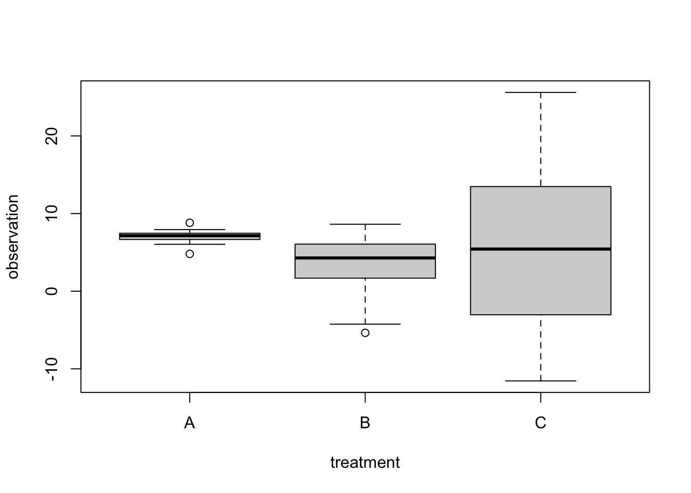
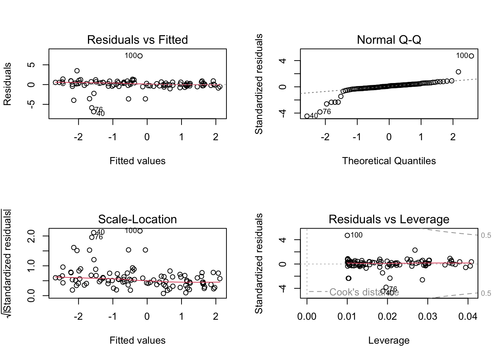

Modelling dispersion means that we describe how the expected variance changes as a function of the mean or predictor variables. The residual problem that we address by that is know as heteroskedasticity.
9.1 Heteroskedasticity in the linear model
The easiest way to understand heteroskedasticity is in the linear model. Let’s look at an extreme example that we create by simulating some data
set.seed(125)data =data.frame(treatment =factor(rep(c("A", "B", "C"), each =15)))data$observation =c(7, 2 ,4)[as.numeric(data$treatment)] +rnorm( length(data$treatment), sd =as.numeric(data$treatment)^2 )boxplot(observation ~ treatment, data = data)

Especially p-values and confidence intervals of lm() and ANOVA can react quite strongly to such differences in residual variation. So, running a standard lm() / ANOVA on this data is not a good idea - in this case, we see that all regression effects are not significant, as is the ANOVA, suggesting that there is no difference between groups.
fit =lm(observation ~ treatment, data = data)summary(fit)
Call:
lm(formula = observation ~ treatment, data = data)
Residuals:
Min 1Q Median 3Q Max
-17.2897 -1.0514 0.3531 2.4465 19.8602
Coefficients:
Estimate Std. Error t value Pr(>|t|)
(Intercept) 7.043 1.731 4.069 0.000204 ***
treatmentB -3.925 2.448 -1.603 0.116338
treatmentC -1.302 2.448 -0.532 0.597601
---
Signif. codes: 0 '***' 0.001 '**' 0.01 '*' 0.05 '.' 0.1 ' ' 1
Residual standard error: 6.704 on 42 degrees of freedom
Multiple R-squared: 0.05973, Adjusted R-squared: 0.01495
F-statistic: 1.334 on 2 and 42 DF, p-value: 0.2744
summary(aov(fit))
Df Sum Sq Mean Sq F value Pr(>F)
treatment 2 119.9 59.95 1.334 0.274
Residuals 42 1887.6 44.94
So, what can we do?
9.1.1 Transformation
One option is to search for a transformation of the response that improves the problem - If heteroskedasticity correlates with the mean value, one can typically decrease it by some sqrt or log transformation, but often difficult, because this may also conflict with keeping the distribution normal.
9.1.2 Modelling the variance / dispersion
The second, more general option, is to model the variance - Modelling the variance to fit a model where the variance is not fixed. We will discuss two packages in R that allow to model the dispersion
The first (traditional) option is to use nlme::gls. GLS = Generalized Least Squares. In the gls function, you can specify a dependency of the residual variance on a predictor or the response via the weight argument. There are different types of dependencies that you can specify, see ?varFunc. In our case, we will use the varIdent function, which allows to specify a different variance per treatment.
The second option for modeling variances is to use the glmmTMB package. Here, you can specify an extra regression formula for the dispersion (= residual variance). If we fit this:
library(glmmTMB)fit =glmmTMB(observation ~ treatment, data = data, dispformula =~ treatment)summary(fit)
We get 2 regression tables as outputs - one for the effects, and one for the dispersion (= residual variance). We see, as expected, that the dispersion is higher in groups B and C compared to A. An advantage over gls is that we get confidence intervals and p-values for these differences on top!
Excercise variance modelling
Take this plot of Ozone ~ Solar.R using the airquality data. Clearly there is heteroskedasticity in the relationship:
plot(Ozone ~ Solar.R, data = airquality)
We can also see this when we fit the regression model:
m1 =lm(Ozone ~ Solar.R, data = airquality)par(mfrow =c(2, 2))plot(m1)
We could of course consider other predictors, but let’s say we want to fit this model specifically
Try to get the variance stable with a transformation.
Use the gls function (package nlme) with the untransformed response to make the variance dependent on Solar.R. Hint: Read in varClasses and decide how to model this.
Use glmmTMB to model heteroskedasticity.
Solution
9.2 Heteroskedasticity in GLMMs
GLM(M)s can be heteroskedastic as well, i.e. dispersion depends on some predictors. In glmmTMB, you can make the dispersion of the negative Binomial dependent on a formula via the dispformula.{R} argument, in the same way as in nlme.{R} for the linear model.
Variance problems would show up when plotting residuals against predicted and predictors. On the previous page, we saw some variance problems in the Salamander model. We could add a variable dispersion model via
m3 =glmmTMB(count ~ spp + mined + (1|site), family = nbinom1,dispformula =~ spp + mined , data = Salamanders)summary(m3)
9.3 Excursion: outliers, robust and quantile regression
What can we do if, after accounting for the functional relationship, response transformation and variance modelling, residual diagnostic 2 shows non-normality, in particular strong outliers? Here simulated example data with strong outliers / deviations from normality:
Fitting the model, we see that the distribution is to wide:
fit =lm(growth ~ concentration)par(mfrow =c(2, 2))plot(fit)

What can we do to deal with such distributional problems and outliers?
Removing - Bad option, hard to defend, reviewers don’t like this - if at all, better show robustness with and without outlier, but result is sometimes not robust.
Change the distribution - Fit a model with a different distribution, i.e. GLM or other.
Robust regressions.
Quantile regression - A special type of regression that does not assume a particular residual distribution.
9.3.1 Robust regression
Robust methods generally refer to methods that are robust to violation of assumptions, e.g. outliers. More specifically, standard robust regressions typically downweight datap oints that have a too high influence on the fit. See https://cran.r-project.org/web/views/Robust.html for a list of robust packages in R.
# This is the classic method.library(MASS)fit =rlm(growth ~ concentration) summary(fit)
Call: rlm(formula = growth ~ concentration)
Residuals:
Min 1Q Median 3Q Max
-7.1986 -0.3724 0.0377 0.3391 7.0902
Coefficients:
Value Std. Error t value
(Intercept) -0.0978 0.0594 -1.6453
concentration 2.0724 0.1048 19.7721
Residual standard error: 0.534 on 98 degrees of freedom
# No p-values and not sure if we can trust the confidence intervals.# Would need to boostrap by hand!# This is another option that gives us p-values directly.library(robustbase)fit =lmrob(growth ~ concentration) summary(fit)
Call:
lmrob(formula = growth ~ concentration)
\--> method = "MM"
Residuals:
Min 1Q Median 3Q Max
-7.2877 -0.4311 -0.0654 0.2788 7.0384
Coefficients:
Estimate Std. Error t value Pr(>|t|)
(Intercept) -0.04448 0.05160 -0.862 0.391
concentration 2.00588 0.08731 22.974 <2e-16 ***
---
Signif. codes: 0 '***' 0.001 '**' 0.01 '*' 0.05 '.' 0.1 ' ' 1
Robust residual standard error: 0.5549
Multiple R-squared: 0.8431, Adjusted R-squared: 0.8415
Convergence in 7 IRWLS iterations
Robustness weights:
9 observations c(27,40,47,52,56,76,80,91,100)
are outliers with |weight| = 0 ( < 0.001);
5 weights are ~= 1. The remaining 86 ones are summarized as
Min. 1st Qu. Median Mean 3rd Qu. Max.
0.6673 0.9015 0.9703 0.9318 0.9914 0.9989
Algorithmic parameters:
tuning.chi bb tuning.psi refine.tol
1.548e+00 5.000e-01 4.685e+00 1.000e-07
rel.tol scale.tol solve.tol eps.outlier
1.000e-07 1.000e-10 1.000e-07 1.000e-03
eps.x warn.limit.reject warn.limit.meanrw
1.819e-12 5.000e-01 5.000e-01
nResample max.it best.r.s k.fast.s k.max
500 50 2 1 200
maxit.scale trace.lev mts compute.rd fast.s.large.n
200 0 1000 0 2000
psi subsampling cov
"bisquare" "nonsingular" ".vcov.avar1"
compute.outlier.stats
"SM"
seed : int(0)
9.3.2 Quantile regression
Quantile regressions don’t fit a line with an error spreading around it, but try to fit a quantile (e.g. the 0.5 quantile, the median) regardless of the distribution. Thus, they work even if the usual assumptions don’t hold.